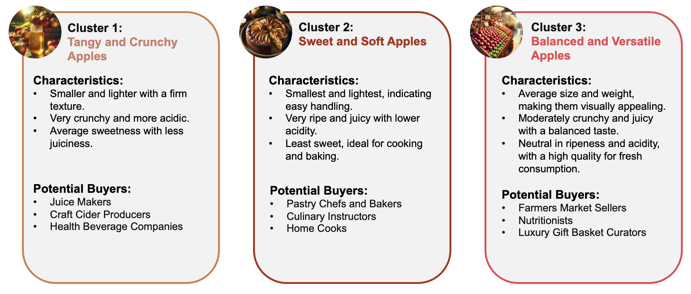

Apple Quality Prediction and Clustering
The goal of this project was to analyse a dataset, provided by an American apple company, which contains scaled data on apple quality. The dataset consists of 4,000 apples and their scaled quality measures: Size, Weight, Sweetness, Crunchiness, Juiciness, Ripeness, Acidity and Quality. We wanted to see if we could create a model to predict this apple quality, and maybe even reduce the amount of measures needed for that prediction. We then later also devised a method to increase the granularity of the apple quality. For this we clustered the apples and suggested new classifications.
First we started with loading the dataset and dropping the column with the apple id, we continued with cleaning the dataset. There was only one row with missing values and no outliers which needed to be cleaned.
For further preprocessing we checked the datatype of all columns and encoded the quality column. This allowed us to work with a data frame that only contains numeric values with the dtype float64 or int64. Next we checked the distribution of the measures using a Shapiro-Wilk test for each numeric column. The 4 columns which where not normally distributed where visually displayed.
To explore how the measures correlated we created a correlation matrix.
Here we could see, that there is no single measures that is overly important to the model.
The next step was to create a random forest classifier model to predict the apple quality based on all 7 available measures. This model had a 0.90 accuracy score. Extracting the features importance of the model also confirms how there isn’t a single measures thats overly important.
Our idea was to reduce the measures needed to classify the quality. We wanted to see if it was possible to predict the quality, with only using ripeness, size and weight. This would be beneficial, as the farmers wouldn’t need to cut open their apples to predict quality. However, this model only has an accuracy score of 0.67. This means a model where you only use these external features as predictors isn’t nearly as precise enough as a wholistic approach. It also wouldn’t be precise enough to be usable for farmers.
Given the quality measure is not only determinable by external features, we wanted to explore what quality actually means. We thought quality might be more granular than just good or bad if it’s not equal to edible or not edible. For this approach we clustered the bad quality apples in two separate clusters. We than created a data frame that contains three clusters and looked at the centroids of these clusters. To compare the clusters we used the good quality apples as our reference.
Clusters 1 and 2 are the clusters we created out of the “bad quality” apples, cluster 3 are the “good quality” apples.
This more granular view allows for a better segmentation of the apples and better targeting to different use cases.
This project allowed us to explore different data analytics methods and apply them to a real world scenario.